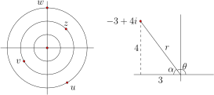

Similarly, \(e^{i0} = \cos(0) + i\sin(0) = 1\text{,}\) and it's a quick check to see that \(e^{i\pi} = -1\text{,}\) which leads to a simple equation involving the most famous numbers in mathematics (except 8), truly an all-star equation:
If \(z = x+yi\) and \((x,y)\) has polar form \((r,\theta)\) then \(z =
re^{i\theta}\) is called the polar form of \(z\text{.}\) The non-negative scalar \(|r|\) is the modulus of \(z\text{,}\) and the angle \(\theta\) is called the argument of \(z\), denoted \(\arg(z\)).
Example2.2.2Exploring the polar form
On the left side of the following diagram, we plot the points \(z =
2e^{i\pi/4}, w = 3e^{i\pi/2}, v = -2e^{i\pi/6}, u = 3e^{-i\pi/3}.\)

To convert \(z = -3 + 4i\) to polar form, refer to the right side of the diagram. We note that \(r = \sqrt{9 + 16} =
5\text{,}\) and \(\tan(\alpha) = 4/3\text{,}\) so \(\theta = \pi -
\tan^{-1}(4/3)\approx 2.21\) radians. Thus,
where the equation is taken modulo \(2\pi\text{.}\) That is, depending on our choices for the arguments, we have \(\arg(vw) = \arg(v)+ \arg(w) + 2\pi k\) for some integer \(k\text{.}\)
Example2.2.4Polar form with \(r\geq 0\)
When representing a complex number \(z\) in polar form as \(z = re^{i\theta}\text{,}\) we may assume that \(r\) is non-negative. If \(r \lt 0\text{,}\) then
Convert the following points to polar form and plot them: \(3 +
i\text{,}\) \(-1 - 2i\text{,}\) \(3 - 4i\text{,}\) \(7,002,001\text{,}\) and \(-4i\text{.}\)
2
Express the following points in Cartesian form and plot them: \(z = 2e^{i\pi/3}\text{,}\) \(w = -2e^{i\pi/4}\text{,}\) \(u = 4e^{i5\pi/3},\) and \(z\cdot u\text{.}\)
3
Modify the all-star equation to involve 8. In particular, write an expression involving \(e, i, \pi, 1,\) and 8, that equals 0. You may use no other numbers, and certainly not 3.
4
If \(z = re^{i\theta}\text{,}\) prove that \(\overline{z} =
re^{-i\theta}\text{.}\)